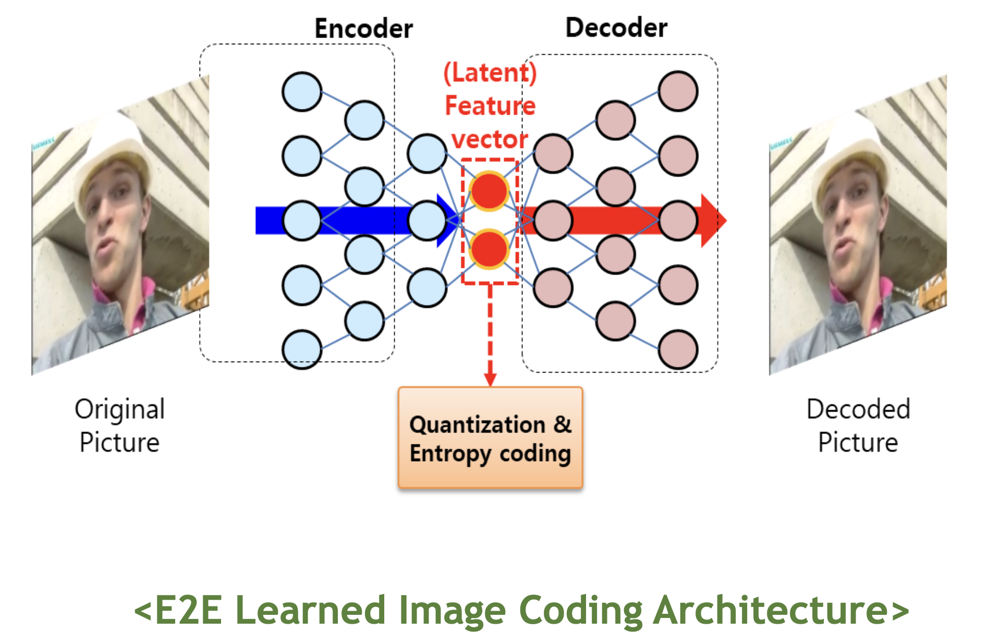
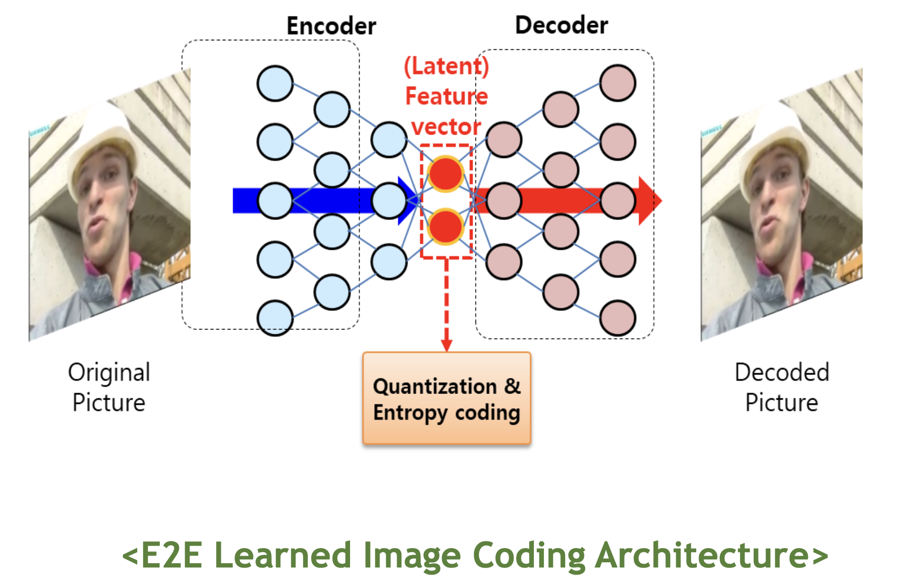

Introduction
Visual Media란?
영상미디어란 시각적으로 소비 및 활용하는 디지털 영상을 말하며, TV, 휴대폰, 인터넷 등을 통해 소비되는 2D 영상뿐만 아니라 VR/AR 영상, 입체공간 영상을 포함합니다.
- UHD/8K/16K 고화질 2D 영상
- HMD 등을 활용한 VR/AR 영상
- 멀티뷰 3D, 라이트필드, 홀로그램 등 입체공간 영상
최근 들어 디지털 영상미디어가 질적/양적으로 팽창하고 있으며, 인공지능 기술과 접목되어 지능화/고도화 되면서 자율주행/국방/의료/교육 등 타 산업으로도 기술/서비스가 확산 되고 있습니다.
따라서 영상미디어 분야의 중요성과 파급력은 앞으로도 점점 커질 것으로 전망됩니다.
영상미디어 연구를 위한 핵심 기술로는 “영상처리”, “머신러닝”, “컴퓨터비전” 등이 있으며, 우리 연구실은 개발된 기술의 국제표준화를
통해 실감나는 디지털 세상을 만드는 데 기여하는 것을 지향합니다.


 
